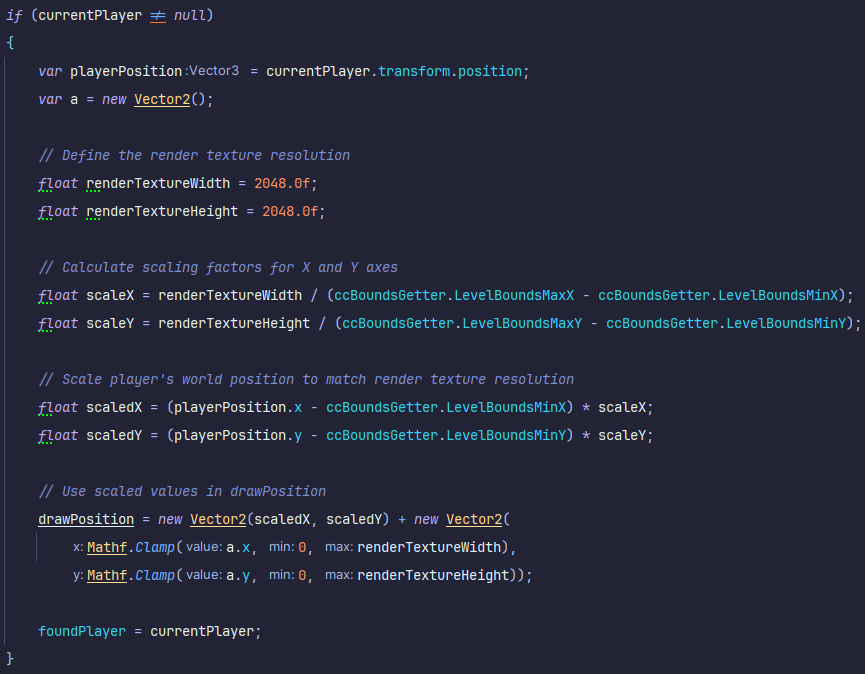

Operation Starfall
Project Status: On hold
Project Type: Hybrid Learning Environment
Project Duration: 3 ~ 4 weeks
Software Used: Unity
Languages Used: C#
Primary Role(s): Game Developer
Team: 2 devs
About Operation Starfall
Our Unannounced Game as a Service is a 2D Metroidvania experience for local co-op play, inspired by beloved 1980s cartoons. It operates as a constantly evolving game, offering an expanding open world, engaging storylines, and character customization. Join up to 4 players as you embark on cooperative adventures and exciting missions, uncovering the mysteries of the game's world while customizing your characters with 1980s nostalgia.
My Features
Intro
The overlay map feature was supposed to act as a sort of mini-map to the player(s). Though we didn't get to finish it before our time at Neon Origins was over, it has been yet another great learning experience. In this project i learned how to utilize blitting in multiple ways and i've discovered about render textures & blend materials.
The shadergraph
The initial shader we've put together with 3 inputs:
1: The Map.
2: The Fog.
3: The Mask.
Development
During the initial design phase of this feature i had just worked on multiple shader related features before this one.
So i got together with my colleagues to discuss how we were going to handle this from a technical standpoint.
Each of us vaguely knew what had to be done, but which way would be the most effecient?
I suggested setting up an extra camera that screenshots the whole map of each level through blitting.
The only issue with this was, i had no idea how to do this specifically, so i went on ahead and experimented a little.
I wrote some throwaway shader code that was supposed to get the Main Camera in the scene as a component,
then i litteraly wrote 'Camera.Blit' thinking that was a thing.
It wasn't so at that point i hit a roadblock in my thinking process due to my limited knowledge at the time.
2 classes on the camera
After a lot of research and brainstorming, we asked our technical director for advice.
I explained to him i couldn't find out how to blit a whole level with the camera.
A function derrived from the original Texture Drawer class.

He told me i could possibly draw a texture upon the map itself instead of blitting the level.
That's how i found out about render textures and blend materials existance.
Creating a class that uses the draw function from the Texture Drawer, i could now clearly figure out how to create my contribution in this feature.
drawPosition.x += 0.5f;
This single line of code uses the brush, in this case a custom blit shader to draw at it's destination. The blend material in use is a perfect example of an efficient way to achieve what i tried by just using a regular blit.
A gif of me drawing manually
Since this feature is intended to have the player act as the element that clears up the fog on the map,
I linked the draw position to the player position.
v2f vert (appdata v)
{
v2f o;
o.vertex = UnityObjectToClipPos(v.vertex);
o.uv = TRANSFORM_TEX(v.uv, _MainTex);
UNITY_TRANSFER_FOG(o,o.vertex);
return o;
}
In the snippet shown above is a small piece of logic from the CustomBlit shader written for this feature.
It ensures that the vertex position is converted from object space to clip space, allowing correct rendering in the camera's view.
Simplified: the brush only draws within the borders of it's destination (the canvas).
The drawn texture:
Thanks to the Custom Blit, the drawn texture saves on play and out of play.
Even when starting up the game again it's still there and will draw as usual.
Conclusion
After playing around with the TextureDrawer class and some more experimenting,
It was ready for me to bring it to the actual game instead of my prototype.
By the time i was done, my colleague also got his class together.
His camera bounds class screenshots the level,
and cuts out all uneccesairy elements needed for a map and automatically converts it to a texture.
The source & the texture:

All materials and backgrounds are stripped and screenshot.
Until this point, the 3rd week of the development cycle.
After alot of head bashing and eye opening solutions to our code problems,
i had a last issue before my part of mapping the player worked.
Getting the players position mapped on the canvas accurately according to the world space & level size.
By implementing this, my class would be generic enough for levels of any size instead of just the one we used for testing.
My final extension to the draw function.

I thought since the render texture the canvas uses can max be 2048x2048, so i'll scale by that.
Turned out the player gets drawn way more accurate than unscaled but sadly not 100%.
As the player spawns in, my class automatically assigns a player to an array that serves as a list for the players.
Then my class draws the players position onto the map texture every frame.
This doesn't impact the performance of the game since shaders mainly run on the GPU memory.
By utilizing the Draw function utilizing the logic within the if statement behind the drawPosition variable,
you can customize this class however you like.
The players path:
Most of the code can found here: Github